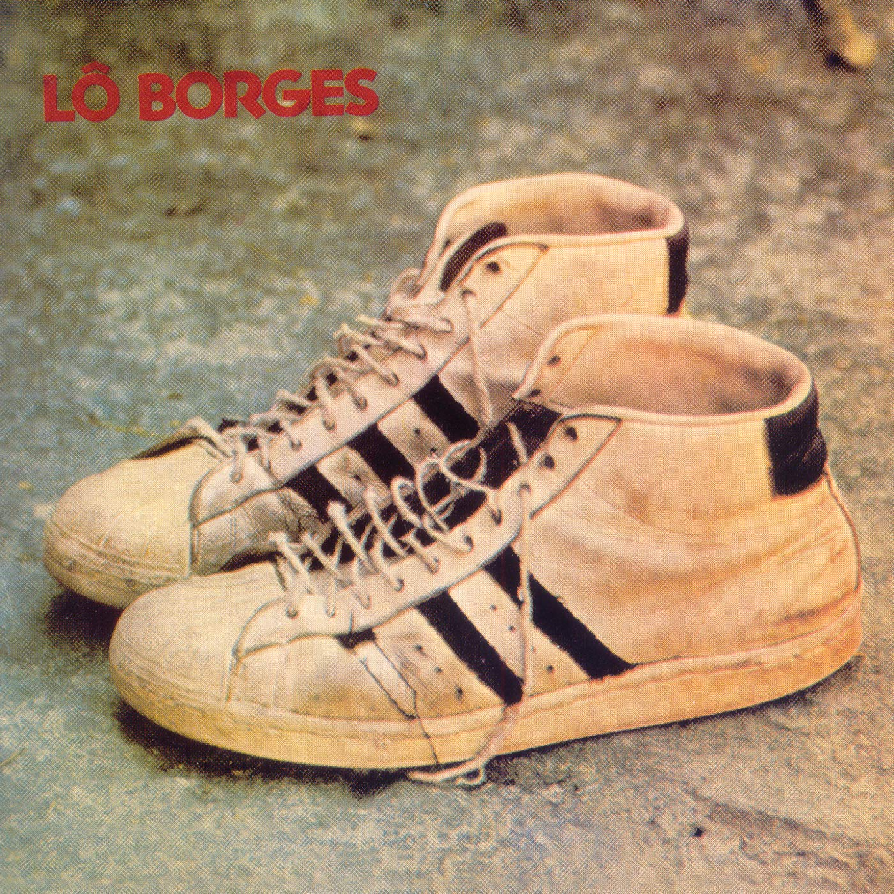

Lô Borges (1972)
Lô Borges
Lô Borges' old beaten-up pair of shoes
R.I.P Lô Borges
00:30
You look way better this way
Você fica bem melhor assim
00:34
Until the end of the coming week
Até o fim da semana que entra
00:37
And through the month, coloring in
Pelo mês adentro colorindo
00:40
The blank space left since December
O espaço em branco que ficou desde dezembro
00:44
You look way better this way
Você fica bem melhor assim
00:47
Until the end of the coming week
Até o fim da semana que entra
00:51
And through the month, coloring in
Pelo mês adentro colorindo
00:53
The blank space left since December
O espaço em branco que ficou desde dezembro
00:57
Step on the morning sun
Pise no sol da manhã
01:01
Never after dinner
Nunca depois do jantar
01:04
Clean the blood off your hands
Limpe o sangue das mãos
01:07
You look way better the way you are
Você fica bem melhor como está
01:48
Step on the morning sun
Pise no sol da manhã
01:51
Never after dinner
Nunca depois do jantar
01:54
Clean the blood off your hands
Limpe o sangue das mãos
01:57
You look way better the way you are
Você fica bem melhor como está
00:17
When someone passes by
Quando alguém passar
00:19
And asks for me
E perguntar por mim
00:22
Don't forget to say
Não esqueça de dizer
00:24
See you tomorrow, see you tomorrow, see you tomorrow
Até amanhã, até amanhã, até amanhã
00:32
Don't forget to smile
Não esqueça de sorrir
00:36
Like I tried to smile
Como eu tentei sorrir
00:38
When someone remembers
Quando alguém lembrar
00:41
What I was, what I am, what I know
O que fui, o que sou, o que sei
00:48
Tell my friends I still know how to dance
Diz pros amigos que eu ainda sei dançar
00:54
Let the world turn forever
Deixa o mundo virar para sempre
01:23
At the bottom of the orchard
No fundo do pomar
01:24
Stars on the sheets
Estrelas no lençol
01:28
I want to see you, have you
Eu quero ver você, ter você
01:32
Be you, love you
Ser você, amar você
01:39
When you listen
Quando você ouvir
01:41
To this song I wrote
Essa canção que eu fiz
01:44
Don't forget to dream
Não esqueça de sonhar
01:47
See you tomorrow, see you tomorrow, see you tomorrow
Até amanhã, até amanhã, até amanhã
00:13
At the end of night
No fim dá noite
00:16
I hear the hunter
Eu escuto o caçador
00:19
With his revolver
Com seu revólver
00:23
Pointed to the moon
Apontado pra a Lua
00:26
Or my hair
Ou meu cabelo
00:30
I need to hide
Preciso me esconder
00:33
In the storm or on the ground
Na tempestade ou no chão
00:37
I know he's coming to find me
Sei que ele vem me procurar
00:47
I'm not afraid
Não tenho medo
00:51
I just want to go in peace
Eu só quero ir em paz
00:54
With my shadow
Com minha sombra
00:57
I just want that moon
Eu só quero aquela Lua
01:01
At the end of the street
No fim dá rua
01:04
Don't let the hunter
Não deixe o caçador
01:08
Set his sights on you
Mirar em cima de você
01:11
He wants to find your heart
Ele quer achar seu coração
01:21
Maybe the hunter
Talvez o caçador
01:24
Won't have time to fire
Não tenha tempo de atirar
01:28
When dawn suddenly breaks
Quando de repente amanhecer
00:08
Dream on the floor
Sonho no chão
00:17
And one day, a road
E um dia uma estrada
00:20
A strange silence on the street
Um estranho silêncio na rua
00:25
A silent fire in the man that passes by me
Um incêndio calado no homem que passa por mim
00:35
Every morning I believe in the stories
Toda manhã acredito nas histórias
00:38
In all the stories in the world
Em todas as histórias do mundo
00:43
And every time the old sun goes out
E toda vez que o velho Sol se apaga
00:45
I need to go so that every thing doesn't erase me
Preciso ir pra tudo não me apagar
00:51
And when I get to my bed
E quando chego na minha cama
00:55
I imagine you better
Eu te imagino melhor
01:07
Dream on the floor
Sonho no chão
01:15
A party doesn't go out
Uma festa não apaga
01:20
The strange silence on the street
O estranho silêncio na rua
01:24
The strange silence on the street
O estranho silêncio na rua
01:28
The strange silence on the street
O estranho silêncio na rua
01:32
The strange silence on the street
O estranho silêncio na rua
01:35
The strange silence on the street
O estranho silêncio na rua
01:40
The strange silence on the street
O estranho silêncio na rua
01:44
The strange silence on the street
O estranho silêncio na rua
00:00
I dreamed
Sonhei
00:02
That I never existed
Que eu nunca existi
00:04
And realized
E vi
00:07
I never dreamed
Que eu nunca sonhei
00:25
I dreamed
Sonhei
00:27
That I never existed
Que eu nunca existi
00:30
And realized
E vi
00:32
I never dreamed
Que eu nunca sonhei
(instrumental)
01:03
I dreamed
Sonhei
01:05
That I never existed
Que eu nunca existi
01:08
And realized
E vi
01:10
I never dreamed
Que eu nunca sonhei
T/L Note: The pronoun used throughout this song is "ele," and I have translated it as "he/him," which is correct. However, as the "it" pronoun doesn't exist in Portuguese, the equivalents to "he" and "she" are also used to describe inanimate objects/feelings/etc. This is all to say, the "he" here may be an "it."
00:02
He appears on top and on the background
Ele surge em cima e no fundo
00:07
Passes through you
Passa em você
00:14
He's light, he's dark and in the night
E ele é claro, é negro e na noite
00:20
Passes through you
Passa em você
00:27
And hides in your heart
E se esconde no seu coração
00:37
In the mountain of wishes
Na montanha dos desejos
00:50
He walks close to the far away
Ele anda perto do longe
00:57
Passes through you, passes through you
Passa em você, passa em você
01:06
Passes through you
Passa em você
01:10
Passes through you
Passa em você
01:13
Passes through you
Passa em você
00:00
— One, two!
Um, dois!
00:08
Where are you going?
Pra onde vai você?
00:12
What's with the hurry?
Que pressa você tem?
00:16
The blood on the walls was never yours
O sangue nas paredes nunca foi o seu
(instrumental)
T/L Note: Some wordplay in this song with the word "jogar," meaning both "throw/toss" and "play"
00:08
Throw you life on the road
Jogue sua vida na estrada
00:11
Like someone that doesn't want to do anything
Como quem não quer fazer nada
00:14
Listen well to the voices from the bushes
Ouça bem as vozes do mato
00:18
Like someone who's opened up their heart
Como quem abriu seu coração
00:25
I dreamed of another world, my love
Eu sonhei outro mundo, meu amor
00:30
And peace lived in our home
E a paz morava na nossa casa
00:37
A thousand people like us
Mil pessoas como nós
00:43
No words, please
Sem palavras, por viver
00:52
I dreamed that it was time to see my friends again
Sonhei que era tempo de reencontrar amigos
00:59
To speak of the old dead time that's passed by fast
Falar do velho tempo morto que passou de pressa
01:05
I dreamed that tomorrow was the time for you to play
Sonhei que amanhã é hora de você jogar
01:12
Throw you life on the road
Jogue sua vida na estrada
01:15
Like someone that doesn't want to do anything
Como quem não quer fazer nada
01:18
Throw you life on the road
Jogue sua vida na estrada
01:21
Like someone that doesn't want to do anything
Como quem não quer fazer nada
01:24
Throw you life on the road
Jogue sua vida na estrada
01:28
Like someone who's opened up their heart
Como quem abriu o seu coração
00:10
I wanted to take you to the nameless desert
Eu queria levar você ao deserto sem nome
00:19
Please don't be snuffed out this night
Por favor não se apague esta noite
00:24
You have to taste my blood
Você tem que provar o meu sangue
00:29
Be the bull and the rose
Seja o touro e a rosa
00:33
Be the bread and the hunger
Seja o pão e a fome
00:38
Be the bull and the rose
Seja o touro e a rosa
00:43
Be the bull and the rose
Seja o pão e a fome
00:48
I wanted to take you to beyond the beaten path
Eu queria levar você para além dos caminhos
00:57
And walk with you through the night
E andar com você pela noite
01:02
Lay down with you on my blood
Me deitar com você no meu sangue
01:07
I need to sleep in peace
Eu preciso dormir em paz
01:12
Like the bull and the rose
Como o touro e a rosa
01:17
I need to take you
Eu preciso levar você
01:22
And tell you I love you
E dizer que te amo
01:26
I need to sleep in peace
Eu preciso dormir em paz
01:31
Like the bull and the rose
Como o touro e a rosa
01:35
I need to take you
Eu preciso levar você
01:41
And tell you I love you
E dizer que te amo
00:09
A street, a pothole
Uma rua, um buraco
00:18
Some people stay sitting down
Ficam sentadas umas pessoas
00:25
And I'm there living with them
E eu fico vivendo com elas
00:30
And we're the landscape
E a gente é a paisagem
00:37
And the others look at us
E os outros olham pra gente
00:42
As if we were people
Como se a gente fosse gente
00:47
And we sit there waiting
E a gente fica esperando
00:52
Something, something
Uma coisa, uma coisa
00:56
I don't know what
Que eu não sei o quê
00:12
I know why I've been so sad
Por que ando triste eu sei
00:18
It's that I live on the street
É que eu vivo na rua
00:23
I expect something more from this cold
Espero algo mais deste frio
00:29
I expect something more and learned
Espero um pouco mais e aprendi
00:35
To be like the axe
A ser como o machado
00:39
That despises the smell of the sandalwood
Que despreza o perfume do sândalo
00:55
The truth is dark, I know
A verdade é negra, eu sei
01:01
And man is evil
E o homem é mau
01:05
I expect something more from this hate
Espero algo mais desse ódio
01:12
I expect something more and learned
Espero um pouco mais e aprendi
01:18
To be like my cat
A ser como o meu gato
01:21
That rests with his eyes open
Que descansa com os olhos abertos
00:36
Brother, I'm the same as you
Meu irmão, eu sou como você é
00:42
I went out in the same darkness and walk about
Saí do mesmo escuro e ando por aí
00:48
Every night I know that tomorrow holds more
Toda noite eu sei que amanhã tem mais
00:54
That we change and keep dreaming, learning
Que a gente muda e continua a sonhar, aprendendo
01:21
In the morning, I don't know how to start
De manhã não sei como começar
01:27
So many old feelings in the same place
Tantas emoções antigas no mesmo lugar
01:33
I walk slowly so I don't fall, more than a thousand abysses
Ando devagar para não cair, mais de mil abismos
01:41
Wait for me at dinner, learning
Me esperam no jantar, aprendendo
(instrumental)